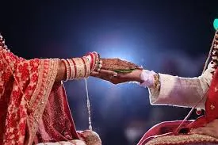

Kundali Matching
For Marriage
Kundali Milan, also known as Kundli Matching or Horoscope Matching, is a comparison of two natal charts.

Kundali Milan, also known as Kundli Matching or Horoscope Matching, is a comparison of two natal charts.

Discover true compatibility and build a lifelong bond guided by the stars.
In Vedic astrology, a Kundli Milan is used to determine a couple's compatibility for a happy and fulfilling marriage. Two people about to get married can gain a deeper understanding of each other and the potential for a prosperous marriage through the process of Kundli matching. If problems arise, Kundli matchmaking ensures to offer solutions for a happy marriage. In simple words, this process provides an astrological prediction for how happy, peaceful, and prosperous the couple's marriage will be.
Marriage marks a turning point in the lives of two people and their families. This union brings two hearts and families closer, creating a shared journey of life. Also, it won't be wrong to say we have witnessed at least one marriage and seen various rituals performed.
In a Hindu marriage, certain rituals are performed. This is because many families prefer to match their children's detailed birth charts to see whether their stars are compatible so that they can get married.
Kundli matching for marriage is an important step in Indian households because most people have immense faith in the Kundli Milan tradition of Vedic astrology. Here, the Moon's placement plays a very important role.
Also, the Moon's placement in the horoscope provides the astrologers with the Janam Rashi (Moon Sign) and Nakshatra (Constellation) of the individual, which are two key aspects of Vedic Astrology.
In Vedic astrology, marriage is considered one of the most significant milestones of life. With the help of kundali matching, you find out how compatible you are with your partner on emotional, physical, and spiritual levels before you get married. The reasons why kundli milan or patrika matching is essential are:
Compatibility Check: Kundali Milan highlights lifestyle, value, and mindset differences between you and your partner. For instance, you may prefer staying home while your partner enjoys an active social life; this insight helps you both prepare for balance and adjustments.
Guna Milan Score: Guna Milan score evaluates harmony in the emotional, physical, and spiritual aspects of marriage. So, if your score with your partner is low in areas like trust or emotional bonding, it signals where extra effort is needed to strengthen your relationship.
Health & Well-being: Kundali matching for marriage can also reveal health-related tendencies for you or your partner. For example, if one chart shows frequent health issues, remedies can be suggested so you both can maintain a healthier and happier married life.
Financial Stability: Astrology also checks financial prospects after marriage. Suppose your chart shows career ups and downs, while your partner's indicates steady growth. Taking proper guidance from an astrologer helps you plan money matters smartly and avoid stress.
Longevity & Harmony: It predicts long-term stability and harmony in your relationship. For example, if your charts indicate ego clashes or frequent disagreements, astrologers recommend remedies to reduce conflicts and nurture a peaceful bond.
According to the Hindu tradition, marital life will be better if the Gunas are matched in Kundli Milan before the wedding. Nevertheless, if there is a Dosha in the Kundli, the couple must address it and take the right steps as necessary. Also, astrological belief states that the marriage will have discord if these defects are ignored and the marriage is conducted.
Moreover, the most important aspect of Kundli Milan is that the person's horoscope should not contain any 'Manglik Dosha'. If the horoscope contains a Manglik or Mangal Dosha, it is considered appropriate to marry someone with a Mangal Dosha.
It is not recommended that horoscope matching between Manglik and non-Manglik couples be performed. In such a case, astrologers can offer effective solutions to alleviate the Dosha.
Kundali matching can be done either by using the couple's date of birth or by their names. While both methods are good for checking compatibility, the approach and accuracy of predictions are different, giving unique insights into the relationship.
That said, let's find out more about the two ways to match the horoscopes of two individuals to check their marriage compatibility.
Kundli Matching by Name - The Kundali Matching by Name method verifies a couple's compatibility using their names. This is because it includes a marriage compatibility analysis where the bride and groom's Gunas are verified by name, this is also known as Guna Milan by Name.
Kundli Matching by Date of Birth - Kundli Matching by date of birth, also known as Lagna Patrika or Janam Patrika Matching, is based on the ancient Ashtakoota method. This method determines the compatibility of two people based on their birth details, such as the time, place, and date of birth.
Once you get done with Kundali Matching by name and date of birth, you can determine your astrological birth chart facts, which will help you make sound decisions regarding marriage. However, before making important marriage-related decisions, you should consult an experienced astrologer for more precise predictions.
In India, the whole process of Kundli Matching is based on the Janam Kundli (birth chart or natal chart) of the couple. An astrologer will check the position of the Moon on the birth chart of both people and start the Guna Milan process. Guna Milan is also known as "Ashtakoota Milan," with "Ashta" meaning "eight" and "Koota" meaning "Aspects." Here are the eight kootas in detail:
Varna (Spiritual Compatibility): Varna assesses the spiritual alignment and ego levels of both individuals. It categorizes individuals into four groups: Brahmin, Kshatriya, Vaishya, and Shudra.
Vashya (Influence and Control): Vashya examines the power dynamics between partners, determining who will have more influence in the relationship. It classifies individuals into categories like manav (human), vanchar (wild animals), Chatushpad (small animals), Jalchar (waterborne animals), Keeta/Keet (insects).
Tara (Birth Star Compatibility): Tara evaluates the compatibility of the couple's birth stars (Nakshatras). The position of the stars at birth influences the couple's well-being and longevity.
Yoni (Sexual Compatibility): Yoni assesses the sexual and emotional compatibility between partners. It is classified into 14 animals, namely Horse, Elephant, Sheep, Snake, Dog, Cat, Rat, Cow, Buffalo, Tiger, Hare/Deer, Monkey, Lion, and Mongoose.
Graha Maitri (Mental Compatibility): Graha Maitri reflects the mental compatibility and natural affection between the partners. It denotes how well the individuals understand and connect on an intellectual level.
Gana (Temperament Compatibility): Gana indicates the mutual behaviors, mental compatibility, and temperaments of the prospective bride and groom. Its nakshatras are divided into three categories- Deva (God), Manava (Human), and Rakshasa (Demon).
Want a detailed Kundli Milan report? Talk to our astrologers.